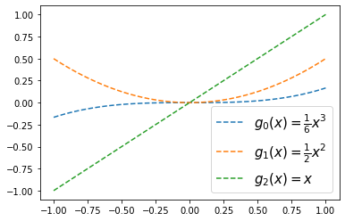
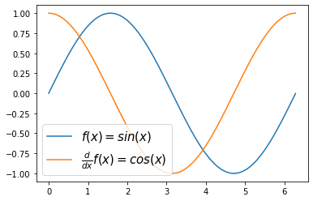

Lesson 11: lambda, map

ref
https://guebin.github.io/DV2022/posts/2022-10-12-6wk-12.html
imports
lambda, map (\(\star\))
lambda
- 예제1: 람다표현식(lambda expression)자체가 하나의 오브젝트임
<function __main__.<lambda>(x)>- “lambda x: (x-2)**2” 는 \(lambda(x)=(x-2)^2\)의 느낌으로 기억하면 쉬움
(사용방법)
Quiz
\(f(x)=\sqrt{x}\) 를 수행하는 함수를 lambda를 이용하여 구성하라.
- 예제2: 람다표현식에 이름을 줄 수 있음.
위의 코드는 아래와 같다.
- 예제3: 조건부 출력
Quiz
임의의 알파벳 문자열을 입력으로 하고, 알파벳이 대문자이면 “대문자 입니다”를 출력하고 소문자이면 “소문자 입니다”를 출력하는 함수를 구성하라.
(힌트) 아래코드 이용
- 예제4: 람다표현식들의 리스트

- 예제5: 람다표현식들의 딕셔너리
{'f1': <function __main__.<lambda>(x)>,
'f2': <function __main__.<lambda>(x)>,
'f3': <function __main__.<lambda>(x)>}- 예제6: 람다표현식을 리턴하는 함수 (함수를 리턴하는 함수)
(예비학습) 함수 \(g(x)\)가 정의되어 있을때 \(\frac{d}{dx}g(x)\)의 값을 계산해보기
(목표) 도함수를 구해주는 derivate 함수를 정의하자. 이 함수는 임의의 함수 g를 입력으로 받으면, g의 도함수(gg)가 리턴되는 기능을 가진다.
(사용1)
plt.plot(x,g(x),label=r'$f(x)=sin(x)$')
plt.plot(x,gg(x),label=r'$\frac{d}{dx}f(x)=cos(x)$')
plt.legend(fontsize=15)<matplotlib.legend.Legend at 0x7fa54cde3a50>
(사용2)
x = np.linspace(-1,1,100)
plt.plot(x,g0(x),'--',label=r'$g_0(x)=\frac{1}{6}x^3$')
plt.plot(x,g1(x),'--',label=r'$g_1(x)=\frac{1}{2}x^2$')
plt.plot(x,g2(x),'--',label=r'$g_2(x)=x$')
plt.legend(fontsize=15)<matplotlib.legend.Legend at 0x7f662b86ed10>
- 예제7: 예제6의 다른표현
(사용1)
plt.plot(x,g(x),label=r'$f(x)=sin(x)$')
plt.plot(x,gg(x),label=r'$\frac{d}{dx}f(x)=cos(x)$')
plt.legend(fontsize=15)<matplotlib.legend.Legend at 0x7f662b5fef50>
(사용2)

map
- 개념: $(f,[x_1,x_2,,x_n] )=$
- 예제1:
(다른구현1)
(다른구현2)
(다른구현3)
(다른구현4)–최악
(다른구현5)–더 최악
Quiz
\(x=[1,2,3,4,5]\)에 대하여 \(x^2\)을 수행하는 함수를 구현하라.
- 예제2: 문자열을 입력으로 받고 대문자이면 True, 소문자이면 False
입력: A,B,C,a,b,c
출력: T,T,T,F,F,F- 예제3: 두개의 입력을 받는 함수 (map을 이용하는 것이 리스트 컴프리헨션보다 조금 편한것 같다)
(다른구현)– 리스트컴프리헨션
quiz

\(f(x,y) = max(x,y)\) 를 구현하여 \({\bf x}\),\({\bf y}\) 각 원소에 적용하고 결과를 시각화 하라.
- 예제4: map은 “하나의 함수에 다양한 입력”을 적용하는 경우에만 사용가능, 리스트컴프리헨션은 “다양한 함수에 다양한 입력” 지원
map으로 구현시도 \(\to\) 실패
리스트컴프리헨션으로 구현시도 \(\to\) 성공
- 종합: map과 리스트컴프리헨션과 비교
- map은 for문을 위한 \(i\)등의 인덱스를 쓰지 않지만 리스트컴프리헨션은 필요함
- map은 좀더 리스트컴프리헨션보다 제약적으로 사용할 수 밖에 없음.
Quiz
1.
아래와 같은 수열이 있다고 하자.
array([1, 1, 4, 0, 2, 3, 2, 1, 4, 4, 0, 0, 3, 0, 1, 3, 1, 0, 0, 1, 2, 1,
1, 0, 0, 1, 2, 1, 2, 0, 0, 1, 3, 4, 0, 0, 3, 0, 0, 0, 3, 4, 3, 4,
0, 3, 0, 0, 4, 0, 4, 0, 3, 3, 4, 0, 4, 2, 0, 1, 1, 1, 3, 0, 1, 1,
4, 1, 1, 4, 1, 0, 4, 2, 1, 2, 0, 0, 1, 3, 3, 2, 0, 3, 3, 3, 0, 4,
2, 1, 3, 0, 2, 3, 0, 3, 4, 2, 1, 3])\({\tt x}\)의 각 원소에 아래와 같은 변환을 수행하라.
- 0 \(\to\) ‘사과’
- 1 \(\to\) ‘배’
- 2 \(\to\) ‘오렌지’
- 3 \(\to\) ‘자동차’
- 4 \(\to\) ‘오토바이’
2.
1의 결과에서 아래와 같은 변환을 수행하라.
- ‘사과’ \(\to\) ‘과일’
- ‘배’ \(\to\) ‘과일’
- ‘오렌지’ \(\to\) ‘과일’
- ‘자동차’ \(\to\) ‘탈것’
- ‘오토바이’ \(\to\) ‘탈것’